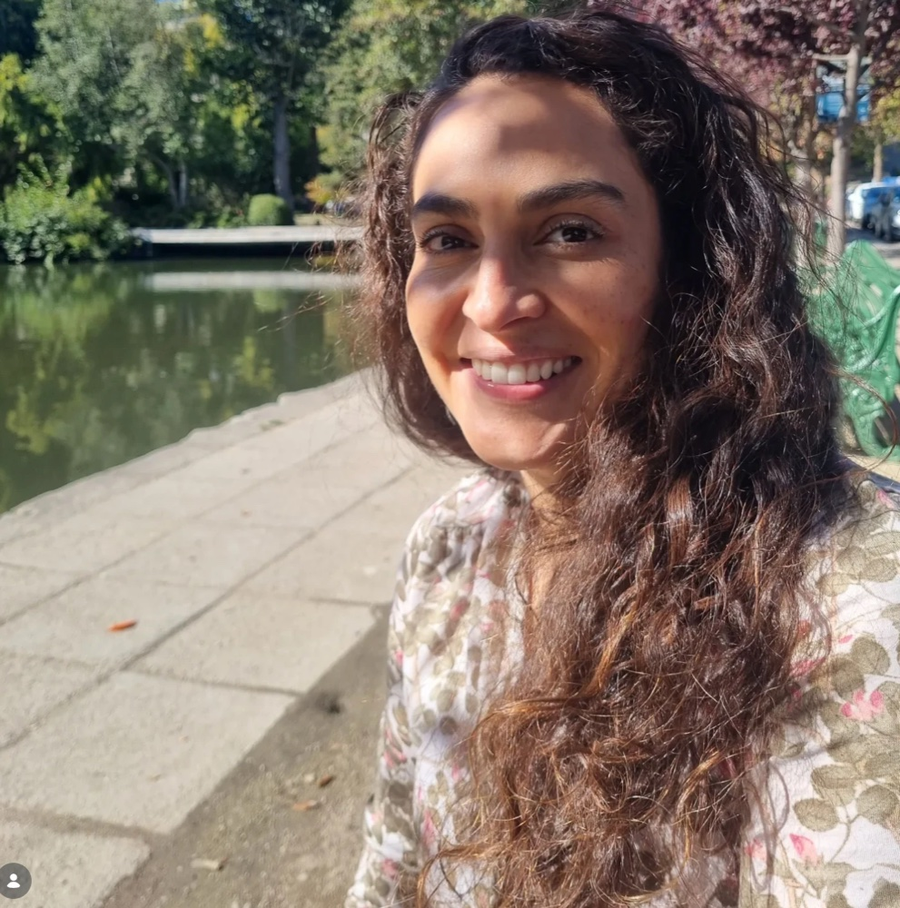

Cuidar a tu familiar en casa, con más calma y más claridad.
Soy enfermera. Visito a tu familiar, reviso cómo está, armo un plan de cuidados fácil de seguir y te acompaño a ti y a tu familia en el día a día.
Servicio particular. No reemplazo al médico ni atiendo urgencias.
Cuando cuidar a quien quieres se vuelve difícil de organizar
No tienes que resolverlo solo. Para eso estoy.
Cómo te acompaño
Evaluación en tu hogar
Reviso la salud, los medicamentos, el riesgo de caídas y el entorno de la casa, con mirada de ergonomía.
Plan de cuidados
Armo objetivos, actividades y señales de alerta en un documento claro, que toda la familia entiende.
Controles de enfermería
Mido presión arterial, glicemia y peso, reviso la medicación y hago seguimiento de enfermedades crónicas, de forma similar a atención primaria.
No reemplazo los controles que indique tu CESFAM o tu médicoApoyo a cuidadores
Te enseño a mover, acompañar y cuidar de forma segura, sin lesionarte: movilización, prevención de caídas y de lesiones por presión.
Coordinación con la red de salud
Te ayudo a preparar controles, entender indicaciones y gestionar derivaciones en el sistema público o privado.
Contacto entre visitas
Respondo tus dudas por mensaje o videollamada, en horario acordado.
Acompañamiento continuo, una visita por semana
- Hago los controles de enfermería a tu familiar
- Actualizo el plan de cuidados en cada etapa
- Educo a la familia y a quienes cuidan
- Te oriento y coordino con la red de salud
- Te entrego un reporte de seguimiento
- Respondo tus mensajes y videollamadas entre visitas
El valor te lo cuento en nuestra primera conversación, antes de que te comprometas a algo.
Y si lo necesitan, puedo sumar:
- Hipnosis clínica complementaria, como apoyo al bienestar, previa evaluación.
- Procedimientos de enfermería de mayor atención, con indicación médica cuando corresponde y tu consentimiento previo.
Se valorizan aparte y solo cuando tu familia los necesite.
Próximamente: talleres para cuidadores y apoyo en el final de vida con cuidados de confort.
Mido lo importante, siempre de la misma forma, y te muestro cómo va cambiando mes a mes, con palabras simples y qué conversar con el médico.
Tres pasos, sin compromisos al inicio
Conversamos
20 minutos por WhatsApp o videollamada para entender la situación y resolver tus dudas.
Visito y armo el plan
Voy a ver a tu familiar, hago la evaluación y te entrego un plan de cuidados con objetivos claros.
Te acompaño
Definimos juntos la frecuencia que necesitas y la ajusto cuando cambie la situación.
Violeta Mera Salinas
Soy enfermera universitaria con 13 años cuidando personas en atención primaria y en el hogar. Conozco el sistema de salud chileno por dentro y sé cómo organizar el cuidado en casa para que tu familia no cargue sola. Atiendo en español e inglés.
Enfermera universitaria · Registro SIS N° 153154Lo que suelen preguntarme
¿Atiendes urgencias?
No. Ante una emergencia hay que llamar al SAMU (131) o ir al servicio de urgencia más cercano.
¿Reemplazas al médico o al CESFAM?
No. Te acompaño de forma complementaria: ayudo a que los controles y las indicaciones médicas se entiendan y se cumplan, y coordino con tu equipo de salud.
¿Dónde atiendes?
En Concepción y alrededores. También hago seguimiento en línea.
¿Cuánto cuesta?
Depende de lo que necesite tu familia. En la primera conversación te explico las opciones y valores antes de que te comprometas a algo.
¿Mi isapre, FONASA o seguro lo reembolsa?
Es un servicio particular, y la cobertura depende de cada plan, seguro o servicio de bienestar. Entrego boleta, y te recomiendo consultar antes con tu institución.
¿Qué pasa con la información de mi familiar?
La trato con confidencialidad y solo con tu consentimiento. Te explico qué datos registro y para qué.
Conversemos sobre tu familia
Escríbeme y coordinamos una primera conversación de 20 minutos, sin compromiso.
Escribir por WhatsApp